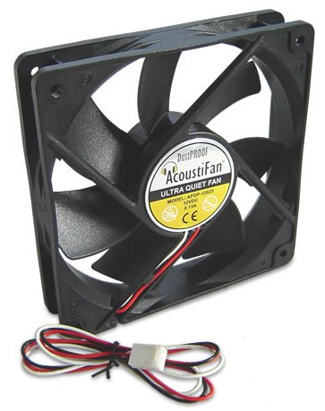
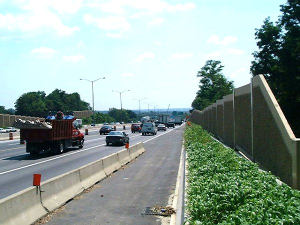
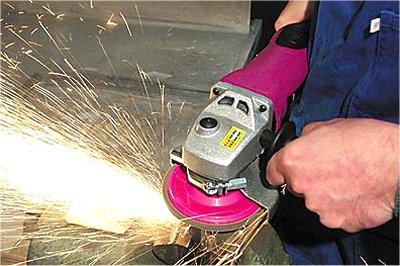
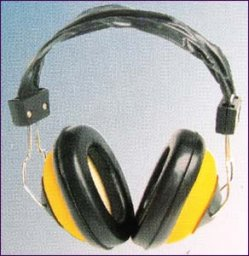
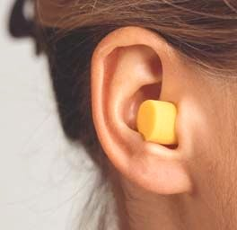

Acustica
D.4. |
|
Combaterea poluării sonore |
Suntem obişnuiţi să numim zgomot oricare sunet nedorit.
Civilizaţia a "populat" mediul în care trăim cu numeroase surse sonore involuntare. Pentru ca să zboare, motorul unui avion trebuie să interacţioneze
violent cu aerul, pentru a asigura forţa de propulsie necesară.
Astfel, apar inevitabil perturbaţii violente ale aerului, care se propagă ca unde sonore − avioanele sunt surse sonore involuntare: nu ne−am
fi dorit ca să fie zgomotoase, dar acesta este un "preţ" pe care trebuie să−l plătim pentru ca să ajungem cât mai repede la destinaţie.
Trenurile, automobilele, maşinile de tuns iarba, ventilatoarele şi multe altele asemenea sunt surse sonore involuntare, care poluează sonor mediul în
care trăim.
Prea mult zgomot ne afectează confortul şi chiar sănătatea!
Tabelul 1D4−1 prezintă câteva nivele ale intensităţii acustice, relevante pentru confortul şi sănătatea noastră.
Tabelul 1D4−1. Nivele ale intensităţii acustice, relevante pentru confortul şi sănătatea noastră.
| Cazul |
Nivelul
intensităţii
acustice
(dB) |
| Pădure |
18 |
| Dormitor |
24 |
| Bibliotecă |
38 |
| Cameră de zi |
40 |
| Birou, sală de clasă |
64 |
| Stradă intens circulată |
70 |
| Aspirator (de la 1 m) |
80 |
| Camion greu (de la 3 m) |
90 |
| Walkman, la volum maxim |
100 |
| Concert rock (în primele rânduri) |
110 |
| Pragul durerii |
130 |
| Motor de avion cu reacţie (de la 3 m) |
140 |
Perforarea instantanee a timpanului
(pierderea definitivă şi totală a auzului) |
160 |
La o creştere cu 10 dB a nivelului intensităţii sonore, se dublează tăria sunetului pe care îl receptăm, astfel că, ascultarea unui walkman (la
volum maxim) provoacă o senzaţie sonoră de 8 ori mai tare decât o stradă intens circulată!
Înţelegând sunetul, cum este acesta generat, cum se transmite şi cum interacţionează cu aparatul auditiv uman, putem controla efectele sunetelor.
Prin proiectarea atentă a aparatelor, maşinilor şi echipamentelor de care avem nevoie, este posibilă reducerea chiar de la sursă a emisiilor sonore.
Astfel, mărind numărul de pale ale unui ventilator de calculator, este posibilă reducerea turaţiei şi a diametrului acestuia, astfel că interacţiunea cu
aerul este mai puţin violentă, fără a reduce debitul de aer care trebuie să circule prin carcasa calculatorului (figura 1D4−1).
|  |
Fig. 1D4−1. Ventilator de calculator.
|
 Provocarea 1D4−1
Provocarea 1D4−1
Au fost depuse eforturi considerabile pentru a reduce nivelul de poluare sonoră provocat de avioanele moderne.
Chiar şi aşa, acestea reprezintă încă surse sonore mult prea intense.
Ce se mai poate totuşi face pentru reducerea nivelului poluării sonore pe care ar putea−o provoca acestea în zonele în care locuiesc oamenii?
Energia acustică provenită de la o sursă sonoră, prin propagare, se repartizează pe din ce în ce mai numeroase molecule de aer, pe măsura îndepărtării de
sursă.
Astfel, nivelul intensităţii sonore scade rapid, odată cu mărirea distanţei faţă de sursă.
De aceea, aeroporturile şi rutele avioanelor se poziţionează cât mai departe de zonele locuite.
Provocarea 1D4−2
Ce se poate face în cazul străzilor intens circulate şi a liniilor ferate care sunt deja în imediata vecinătate a locuinţelor noastre?
Când sursele sonore întâlnesc un obstacol, parte se reflectă, parte sunt absorbite în materialul obstacolului (prin amortizare) şi doar o parte sunt
transmise dincolo de obstacol.
Plasarea unui perete între stradă sau calea ferată şi locuinţe reduce considerabil nivelul de poluare sonoră (figura 1D4−2).

Fig. 1D4-2. Barieră antizgomot.
Provocarea 1D4−3
Cel care lucrează cu un utilaj zgomotos, cum este polizorul unghiular (figura 1D4−3), este expus direct unui nivel sonor prea ridicat.
|  |
Fig. 1D4−3. Lucrul cu polizorul unghiular.
|
Ce se poate face, în aceste condiţii, pentru protejarea auzului său?
Bariera antizgomot poate fi plasată chiar în dreptul urechilor acestuia!
Mici amortizoare, sub forma unor căşti (figura 1D4−4 a) sau chiar a unor "dopuri" (figura 1D4−4 b) pot reduce zgomotul
la un nivel acceptabil.
|  a. |
 b. |
| Fig. 1D4−4. a. Căşti antizgomot. b. "Dopuri" antizgomot.
|
Provocarea 1D4−4
Ar putea fi oare combătut zgomotul cu... zgomot?
Într−una dintre activităţile experimentale pe care le&mainus;ai efectuat (cea în care ai determinat viteza sunetului în aer), când erau îndeplinite
condiţiile de interferenţă distructivă, în dreptul fiecărei boxe, nivelul sonor era considerabil redus.
Generând un zgomot în opoziţie de fază faţă de zgomotul care trebuie combătut, prin interferenţă distructivă poate fi redus considerabil nivelul
sonor în zona care trebuie protejată.
Aceasta este cea mai spectaculoasă metodă de combatere a zgomotului!